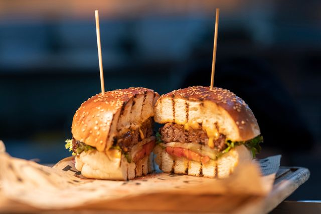

Burger

Homemade Burger Recipe
This classic homemade burger features a juicy, perfectly seared beef patty nestled inside a lightly toasted,
buttery brioche bun. The foundation of the flavor comes from using fresh ground beef with an 80/20 lean-to-fat
ratio, shaped gently to keep the texture tender and seasoned generously with salt and pepper right before
cooking. Searing the patty on a screaming-hot cast-iron skillet creates a beautifully caramelized crust that
locks in the juices, while a melted slice of sharp cheddar cheese blankets the meat in rich, gooey goodness.
To balance the savory richness, the burger is built with layers of fresh, crisp toppings and a tangy signature
sauce. Crisp green leaf lettuce, a thick slice of ripe vine tomato, and briny dill pickles provide a refreshing
crunch in every bite. A final, generous spread of a creamy, secret-style burger sauce made from mayonnaise,
ketchup, and sweet pickle relish ties all the elements together, delivering a nostalgic, restaurant-quality
tavern burger right at home.
Ingredients
- Ground beef (an 80/20 lean-to-fat ratio is best for juice and flavor)
- Coarse salt and freshly cracked black pepper (seasoned right before cooking)
- Sharp cheddar cheese (sliced, to melt over the patty)
- Brioche buns (split and lightly toasted with a little butter)
- Green leaf lettuce (washed and dried)
- Vine-ripened tomato (sliced thick)
- Dill pickle chips (tangy and briny)
- Mayonnaise and ketchup (the creamy, tangy base)
- Sweet pickle relish (for a little crunch and sweetness)
- Splash of white vinegar or pickle juice (to cut through the richness)
Steps
- Shape the patties: Divide your ground beef into equal portions and gently shape them into balls, then
flatten them into discs about 3/4-inch thick. Make the patties slightly wider than your buns, as they will
shrink during cooking. Press a slight dimple into the center of each patty with your thumb to keep them from
puffing up.
- Prep the toppings and sauce: Slice your tomatoes and pickles, and tear off pieces of lettuce so they are
ready to go. Mix your mayonnaise, ketchup, relish, and vinegar in a small bowl to create the burger sauce,
then set it aside.
- Toast the buns: Heat a large skillet or griddle over medium heat. Spread a thin layer of butter on the cut
sides of the brioche buns and place them face-down on the skillet. Toast for 1–2 minutes until they are
golden brown and crisp, then remove them.
- Sear the beef: Turn the heat up to high and let the skillet get smoking hot. Generously season both sides of
the beef patties with salt and pepper right before placing them in the pan. Cook undisturbed for 3–4 minutes
until a deep, dark brown crust forms on the bottom.
- Flip and melt the cheese: Flip the patties over. Immediately place a slice of cheddar cheese on top of each
cooked side. Cook for another 2–3 minutes for medium doneness. If needed, cover the pan with a lid for the
last 30 seconds to help the cheese melt completely.
- Assemble the burger: Spread a generous amount of burger sauce on both the top and bottom toasted buns. On
the bottom bun, layer the lettuce, tomato, and pickles. Place the cheesy burger patty on top, cover it with
the top bun, and serve immediately while hot.
Home